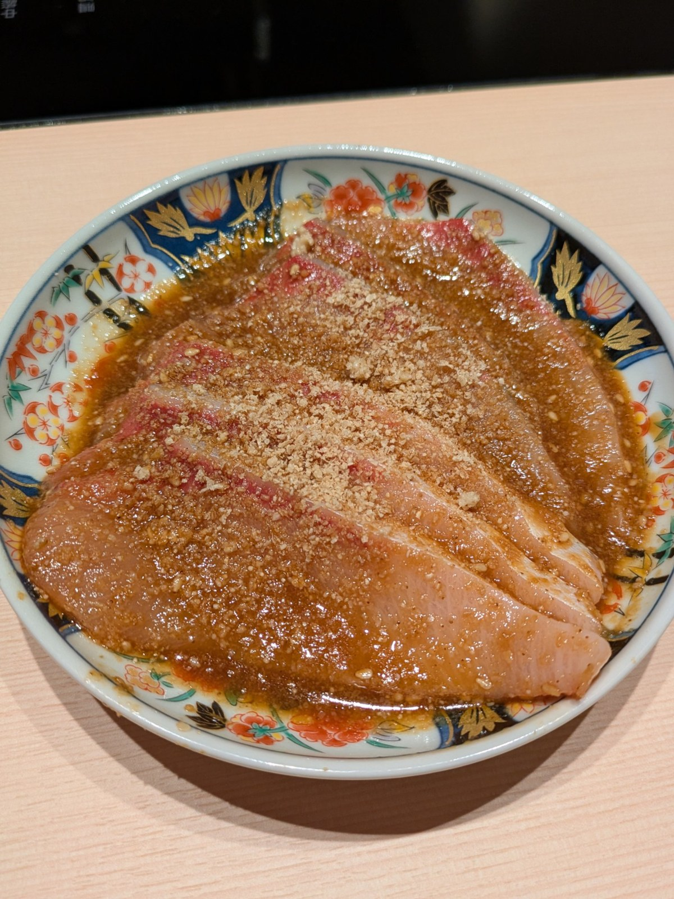
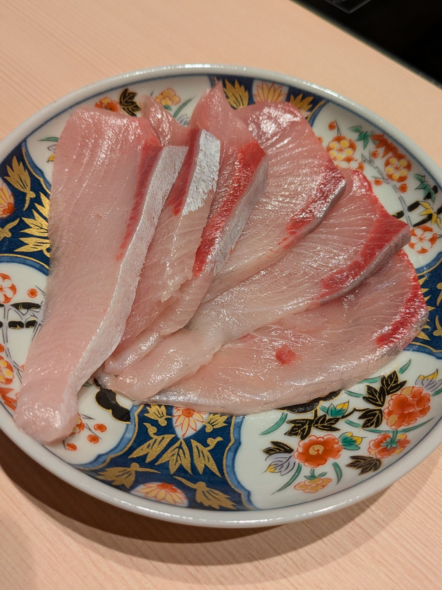

開店前の試食！ごま鰤と鰤刺身
11月16日のオープンに向けて、昨日は試食の日でした。宇和島直送の鰤で、2品を試しました。
ごま鰤

鰤の切り身にごまだれをかけ、すりごまをたっぷりと。ごまの香ばしさが、鰤の脂を引き立てます。ランチの「胡麻ぶり定食」にもつながる一品です。
鰤刺身

まずは素材そのままの刺身で。脂ののりと身の締まり、申し分ありませんでした。
醤油の食べ比べもしました。愛媛の甘口醤油と辛口醤油、どちらが鰤に合うか。私のオススメは、甘口醤油です‼️ 鰤の脂の甘みとよく合います。お店にお越しの際は、ぜひ甘口で試してみてください。
お店の詳しい情報は、こちらの記事にまとめています。
← トップページへ戻る